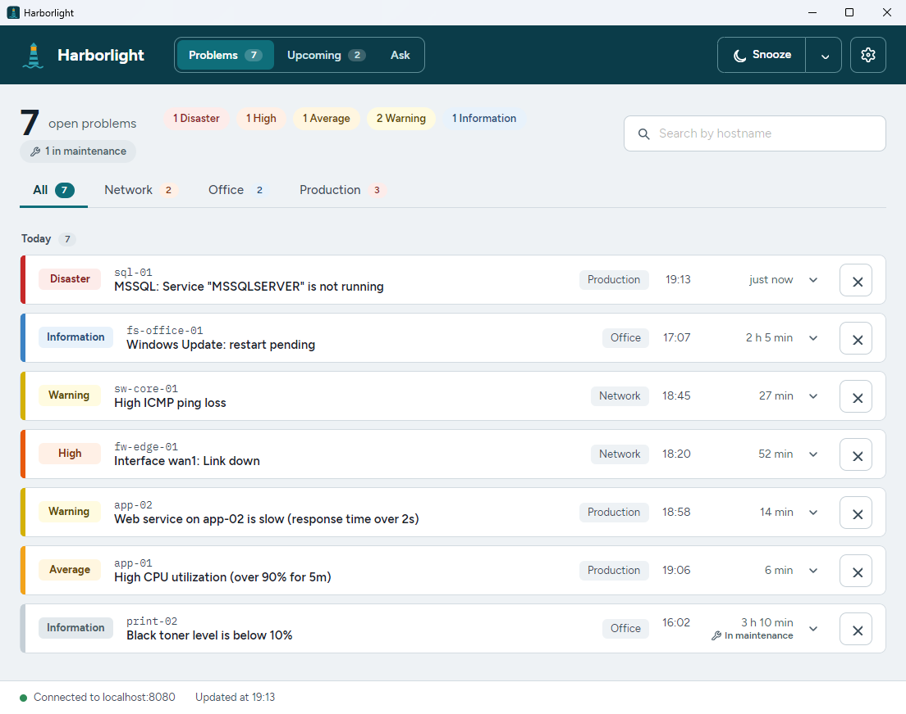

01
Alles in één rustig paneel
Open Harborlight en je ziet meteen hoeveel problemen er openstaan, per dag gesorteerd, met een kleur per severity. Elke hostgroep krijgt een eigen tab, en je zoekt op hostnaam.
- Tellers per severity bovenin
- Hosts in onderhoud in grijs, zonder pop-up of geluid
- Licht of donker, wat jij prettig vindt
- Woont in het systeemvak, met een teller op het icoon

